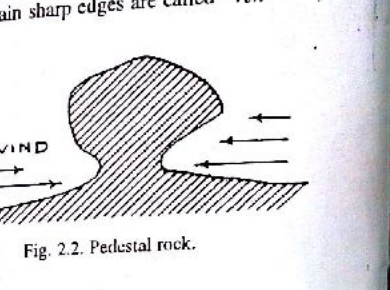
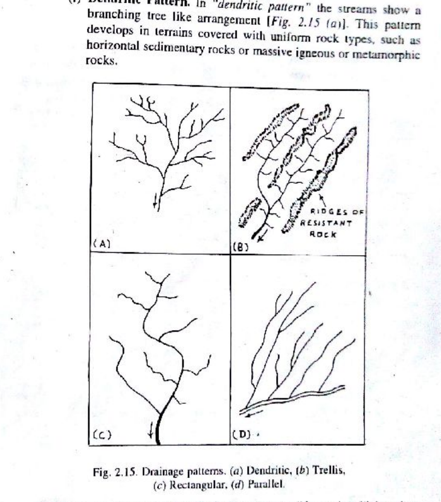
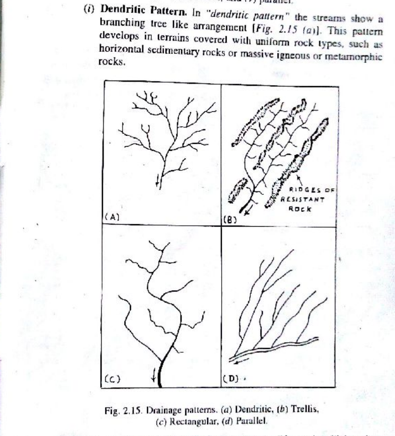
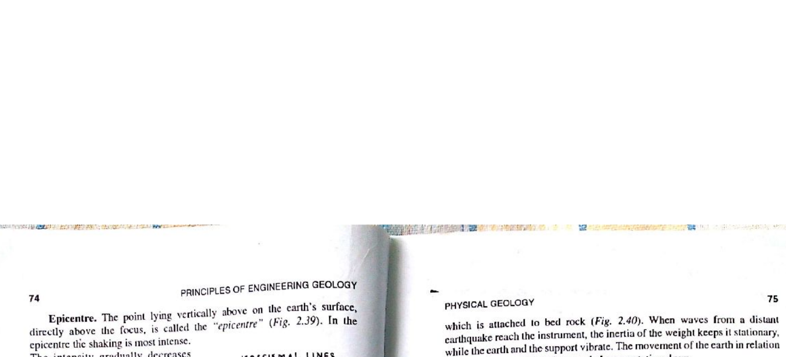

2.1 Weathering of Rocks and Soil Formation
Weathering is the mechanical disintegration and chemical decomposition of rocks in situ under the influence of atmospheric, hydrospheric, and biological agents. Unlike erosion, weathering involves no significant transportation of the fragmented material.
Types of Weathering
- Mechanical (Physical) Weathering: Disintegrates rock into smaller angular fragments without changing chemical or mineralogical composition.
- Frost Wedging (Congelifraction): Water freezing in cracks expands by $\approx 9\%$ in volume, exerting bursting pressures exceeding $2,000 ext{ kg/cm}^2$, producing scree/talus slopes.
- Thermal Insolation & Exfoliation: Diurnal temperature fluctuations cause differential thermal expansion of mineral grains. In massive homogeneous rocks (granite, basalt), curved concentric sheets spall off in onion-skin fashion (Exfoliation domes).
- Spheroidal Weathering: Jointed blocks attacked by chemical weathering along intersecting joint sets lose their sharp corners, rounding into spherical corestones enclosed in saprolite.
- Chemical Weathering: Alters primary minerals into secondary hydrous minerals (clays, oxides, carbonates) through aqueous reactions:
- Hydration: Anhydrite ($\mathrm{CaSO_4}$) converts to Gypsum ($\mathrm{CaSO_4 \cdot 2H_2O}$), causing up to $60\%$ volume expansion.
- Hydrolysis: Feldspar breakdown by carbonic acid: $$2\mathrm{KAlSi_3O_8} + 2\mathrm{H_2CO_3} + 9\mathrm{H_2O} o \mathrm{Al_2Si_2O_5(OH)_4} \ ( ext{Kaolinite}) + 4\mathrm{H_4SiO_4} + 2\mathrm{K}^+ + 2\mathrm{HCO_3}^-$$
- Carbonation: Limestone dissolution: $\mathrm{CaCO_3} + \mathrm{H_2CO_3} o \mathrm{Ca(HCO_3)_2}$ (soluble).
- Oxidation: Ferrous iron in mafic silicates converts to insoluble ferric oxide/hydroxides (Hematite $\mathrm{Fe_2O_3}$, Goethite $\mathrm{FeO(OH)}$), imparting yellow-red stains.


2.2 Geological Work of Streams (Rivers)
Rivers are the primary sculptors of continental landscapes, operating through three interrelated phases: Erosion, Transportation, and Deposition.
Stream Erosion and Valley Development
- Erosional Mechanisms: Hydraulic action (mechanical force of moving water), Abrasion/Corrasion (grinding of bedrock by carried sediment tools), Attrition (mutual collision and rounding of rolling boulders), and Corrosion/Solution.
- Erosional Features: Potholes (drilled by swirling pebbles in riverbeds), Gorges and Canyons (deep, narrow vertical valleys in resistant flat strata), Waterfalls, Knick-points, River terraces, and V-shaped young valleys.
- Transport Dynamics:
$$L \propto v^6 \quad ( ext{Gilbert's Sixth Power Law of Competence})$$The maximum particle size a stream can move varies with the sixth power of water velocity.
- Depositional Features: Alluvial fans and cones (at mountain fronts where slope suddenly decreases), Floodplains, Meanders, Oxbow lakes, Natural levees, Point bars, and Deltas.


2.3 Geological Work of Glaciers and Oceans
Glaciers: Large masses of recrystallized perennial land ice moving downhill under gravity.
- Glacial Erosion: Plucking (quarrying jointed blocks) and Abrasion (striating bedrock with embedded rock tools). Produces Cirques (amphitheatre-shaped rock basins), Arêtes (knife-edge ridges), Horns (pyramidal peaks like Matterhorn), U-shaped valleys (steep sides, flat floor), Hanging valleys (tributary valleys left high above the overdeepened main trough), and Roches Moutonnées.
- Glacial Deposition: Till (Moraine): Unstratified, poorly sorted sediment with faceted, striated boulders. Types of moraines: Lateral, Medial, Ground, and Terminal/End moraines. Glaciofluvial stratified deposits: Drumlins (streamlined tear-drop hills with steep stoss and tapered lee), Eskers (sinuous gravel ridges of subglacial streams), and Kames.

2.4 Groundwater Hydrogeology
Subsurface water occurs in two vertical zones separated by the water table:
- Zone of Aeration (Vadose Zone): Pore spaces contain both water and air. Divided into soil water zone, intermediate vadose zone, and capillary fringe.
- Zone of Saturation (Phreatic Zone): All voids and fractures are completely filled with water under hydrostatic pressure. The upper surface is the Water Table.
- Aquifer Types:
- Unconfined (Phreatic) Aquifer: Directly open to surface recharge; water table fluctuates freely with seasons.
- Confined (Artesian) Aquifer: Trapped between impermeable aquicludes under piezometric pressure. When pierced by a well, water rises above the aquifer top.
- Perched Aquifer: Localized saturated lens supported above the regional water table by a discontinuous clay lens.
2.5 Earthquakes and Seismology
An earthquake is the rapid shaking of the ground caused by sudden brittle slip along a fault and instantaneous release of accumulated elastic strain energy (Reid's Elastic Rebound Theory, 1906).


- Focus (Hypocentre): The subterranean origin point where rock fracture and fault rupture initiate.
- Epicentre: The geographic point on Earth's surface vertically above the focus.
- Seismic Body Waves:
- Primary (P) Waves: Longitudinal/compressional waves. Particle motion is parallel to wave propagation direction. Travel fastest ($V_p \approx 6 ext{--}8 ext{ km/s}$ in crust), propagate through solids, liquids, and gases.
- Secondary (S) Waves: Transverse/shear waves. Particle motion is perpendicular to propagation direction ($V_s \approx 3.5 ext{--}4.5 ext{ km/s}$). Cannot travel through liquids, establishing that Earth's outer core is liquid.
- Surface Waves: Rayleigh (elliptical retrograde ground motion) and Love (transverse horizontal ground motion). Arrive last but possess largest amplitudes and lowest frequencies, causing over $90\%$ of structural building damage.